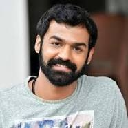
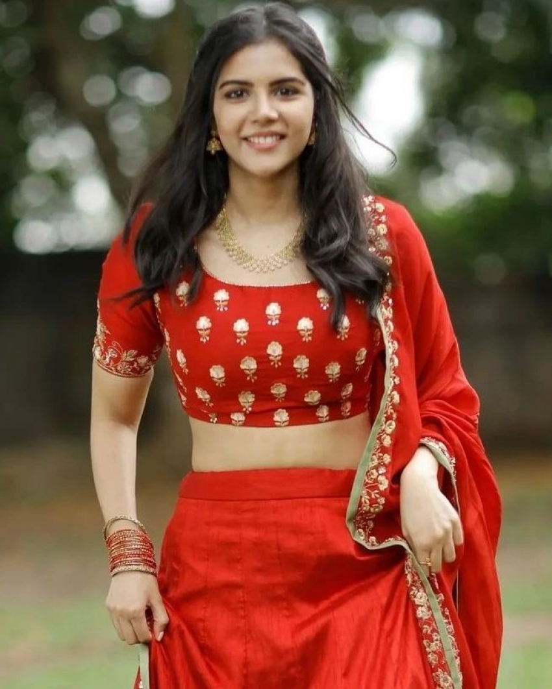
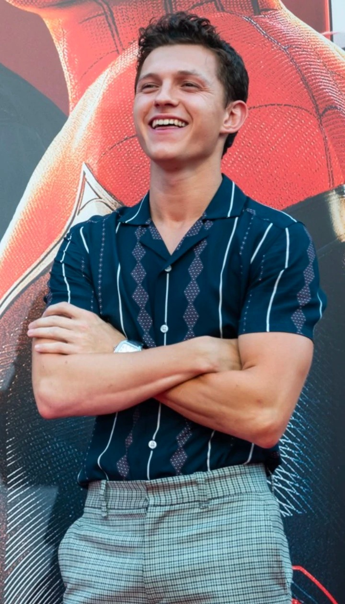
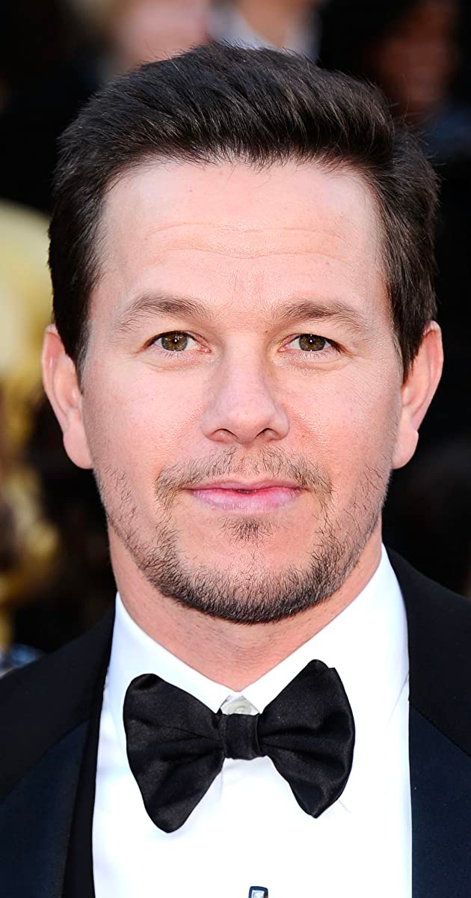
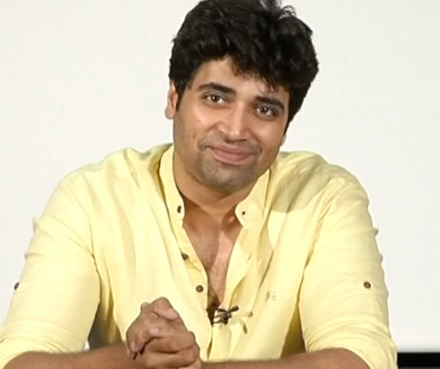
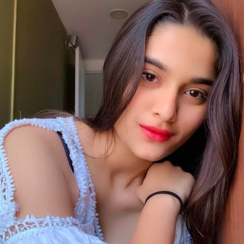

Doctor Strange in the Multiverse of Madness
2022 . PG-13 . 2h 6m

Plot
Doctor Strange teams up with a mysterious teenage girl from his dreams who can travel across multiverses, to battle multiple threats, including other-universe versions of himself, which threaten to wipe out millions across the multiverse. They seek help from Wanda the Scarlet Witch, Wong and others.
Director : Sam Raimi
Writer : Michael Waldron
Cast


Vikram
2022 . 2h 55m

Plot
Amar is assigned to investigate a case of serial killings. When Amar investigates the case, he realizes it is not what it seems to be and following down this path will lead to nothing but war between everyone involved.
Director : Lokesh Kanagaraj
Writer : Lokesh Kanagaraj . Rathna Kumar
Cast
RRR
2022 . 3h 7m

Plot
In 1920, when the British government ruled over India, tyrannical governor Scott Buxton and his sadistic wife Catherine visit a forest in Adilabad and forcefully take away Malli, a young girl with a gift for singing, from the Gond tribe. The tribe's protector Komaram Bheem heads off to Delhi in search of the missing girl..
Director : S. S. Rajamouli
Writer : S. S. Rajamouli
Cast
HRIDAYAM
2022 . 2h 51m

Plot
Arun Neelakandan, a teenager from Kerala, joins KC Tech, a popular engineering college in Chennai for his graduation. He falls in love with college sweetheart Darshana at the first sight. They grow closer after Arun is ragged by his seniors, but a few scuffles and incidents get the seniors suspended and they start dating. Arun accompanies his friend Antony to meet his online girlfriend, and feels attracted to her colleague. He lies to her, states he is single and they lean in for a kiss but they are interrupted by moral police. A guilt-ridden Arun confesses to Darshana, who lividly calls off the relationship. In the heat of their argument, they challenge each other that they will have other romantic partners better than each other.
Director : Vineeth Sreenivasan
Writer : Vineeth Sreenivasan .
Cast


Pranav Mohanlal
Kalyani Priyadarshan
Unchartered
2022 . 1h 56m

Plot
Treasure hunter Victor "Sully" Sullivan recruits street-smart Nathan Drake to help him recover a 500-year-old lost fortune amassed by explorer Ferdinand Magellan. What starts out as a heist soon becomes a globe-trotting, white-knuckle race to reach the prize before the ruthless Santiago Moncada can get his hands on it. If Sully and Nate can decipher the clues and solve one of the world's oldest mysteries, they stand to find $5 billion in treasure -- but only if they can learn to work together.
Director : Ruben Fleischer
Based On : Uncharted by Naughty Dog.
Cast


Tom Holland
Mark Wahlber
Major
2022 . 2h 29m

Plot
The life of Maj. Sandeep Unnikrishnan, who fought against terrorists and was killed in action during the 2008 attacks at the Taj Palace Hotel in Mumbai, India.
Director : Sasi Kiran Tikka
Writer : Adivi Sesh.
Cast


Adivi Sesh
Sai Manjrekar